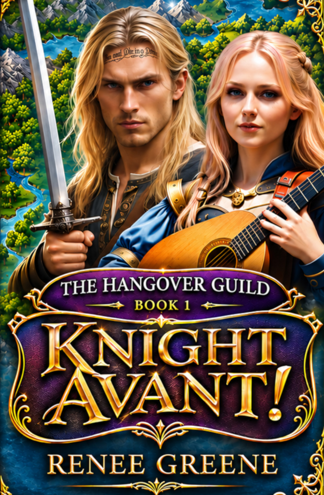

Tom and Nova,
Several years ago, I caught Tom on discord and told him I wrote a fantasy novel starring characters inspired by the two of you. You told me to hit you up on instagram, but the algorithm completely blocked me out, so the book had been sitting on my shelf for years -- collecting dust, staring at me like an abandoned puppy, fighting with its unfinished follow up book, Knight Errant, and plotting its revenge for me not getting it to you.
Now, with you two getting married and retiring, I figured it was finally time to try again.
I put this whole thing together because I'm a huge fan. Your music and story helped me get through a rough time, teaching me to build my castle from the sticks and the stones.
In the story, Allistair, a champion grappler, is invited to become a Knight Avant, his ultimate dream—only to discover they are enforcers for a corrupt, lying regime. Ditching the badge, he teams up with Lina, a colorful, unstoppable sprite minstrel, to go rogue and open the people's eyes to the truth. With powerful enemies hunting them down, this renegade duo is ready to burn the establishment's lies to the ground.
Since snail mail didn't work -- I think the snail got eaten by a Frenchman -- and the IG gates stayed locked, we built this super secret webpage as a safe way for the two of you to check it out.
I am super excited to finally drop this for you, and hope you have as much fun reading Knight Avant as I did writing it. I tried to capture both of your vibes in the characters as a huge thank-you.
Please read, so I no longer have to worry about the book wanting revenge, and enjoy!
-Renee Greene